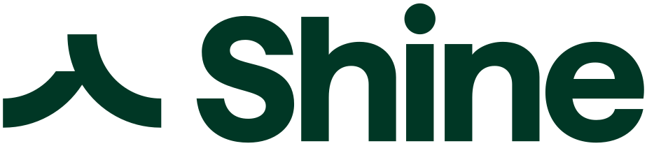

En bref
La meilleure banque pour un compte pro en 2026 est Nickel Pro, avec 8,7/10 (relevé de démonstration). Pour un indépendant, c'est le compte le plus lisible du panel, 50 € par an tout compris, sans condition de chiffre d'affaires, avec le dépôt d'espèces en point de vente. Qonto arrive deuxième avec 8,5/10, l'offre la plus complète pour les sociétés, mais deux fois plus chère dès la première formule. Shine complète le podium avec 8,2/10 et une formule gratuite.
- Qonto Basic coûte 9 € HT par mois en facturation annuelle, soit 108 € HT par an, plus du double des 50 € par an de Nickel Pro.
- Trois comptes du panel sont gratuits à l'entrée, Shine Free, N26 Business Standard et Bourso Business, ce dernier à condition d'une opération par mois.
- Nickel Pro et N26 Business sont réservés aux indépendants, alors que Hello Business accepte les EURL et les SASU.
- Le dépôt d'espèces coûte de 2 à 5 % chez Shine selon la formule et 3 % chez Nickel Pro.
- Blank, l'offre pro du Crédit Agricole, s'arrête d'ici janvier 2027.
Sommaire de ce comparatif
Nos critères et leur poids
Un compte pro ne se juge pas comme un compte de particulier. Un plombier en EI, une graphiste en micro-entreprise et une SAS de huit salariés n'attendent pas la même chose de leur banque. Ce classement est pensé pour l'indépendant, qui ouvre l'essentiel des comptes pro, et le prix comme l'accessibilité y pèsent donc plus lourd que les services réservés aux sociétés.
| Critère | Poids | Ce qu'on regarde |
|---|---|---|
| Prix | 35 % | Coût annuel de la formule d'entrée et frais à l'usage |
| Accessibilité | 25 % | Conditions de chiffre d'affaires, de statut et de résidence |
| Services | 25 % | Chèques, espèces, cartes, outils de gestion, statuts juridiques acceptés |
| Ouverture | 15 % | Pièces demandées, délai, carte remise ou envoyée |
| Note globale | Synthèse | La moyenne pondérée des quatre critères, arrondie au dixième |
Poids fixés avant le relevé, identiques pour les dix comptes.
Ce choix de poids a une conséquence directe. Un compte très complet mais deux fois plus cher dès la première formule ne peut pas prendre la tête de ce classement. C'est ce qui arrive à Qonto, premier sur les services.
Le classement des 10 comptes pro
01Le prix tout compris50 € par an, espèces en point de vente8,7/10
02Le plus completDe 9 à 199 € HT par mois, sociétés comprises8,5/10
03

La formule gratuite0 € en Free, dépôt d'espèces dès 2 %8,2/10Nickel Pro prend la première place. Il gagne nettement sur le prix tout compris, 50 € par an prélevés en une fois, virements instantanés et prélèvements illimités inclus, sans engagement ni condition de chiffre d'affaires. Il gagne aussi sur les espèces, déposées en point de vente parmi les plus de 8 600 que revendique Nickel, un vrai atout pour un artisan ou un commerçant payé en liquide. Ses limites sont connues. Les SASU et les EURL sont exclues, il n'existe pas encore de terminal de paiement et l'application reste moins riche que celle de Qonto.
Qonto est deuxième, à deux dixièmes. Il prend la première place sur les services. Six formules couvrent tout le spectre, de Basic à 9 € HT par mois pour un indépendant jusqu'à Enterprise à 199 € HT pour une entreprise structurée, et les chèques sont encaissés par courrier. L'outil de gestion et de pré-comptabilité est le plus abouti du panel avec celui de Revolut Business, et Qonto revendique plus de 750 000 entreprises clientes. Son défaut tient au prix, 108 € HT par an pour la formule la moins chère, plus du double de Nickel Pro.
Shine complète le podium. Sa formule Free à 0 € est un vrai argument, et c'est un des rares comptes pro qui publie ses frais de dépôt d'espèces, de 5 % en Free à 2 % en Business. Shine appartient désormais à Cegid, l'éditeur de logiciels de gestion, et revendique plus de 400 000 clients.
Derrière le podium, les écarts se resserrent. N26 Business, quatrième avec 7,9/10, est gratuit en Standard mais réservé aux micro-entrepreneurs et EI, et n'encaisse pas les chèques. Revolut Business, cinquième, a l'application la plus riche du panel, mais sa formule Basic coûte 10 € par mois et ses tarifs d'espèces et de chèques ne sont pas publiés dans les sources que nous avons lues. Bourso Business, sixième, est gratuit dès une opération par mois et encaisse les chèques sans frais jusqu'à 1 500 € sur 30 jours glissants, mais refuse les espèces.
La Banque Postale et Hello Business jouent une autre partition. Ce sont des banques, avec un réseau ou une maison mère derrière, à 9,80 € TTC par mois pour l'offre micro-entrepreneur de la première et dès 12 € par mois pour la seconde. Hello Business, marque du groupe BNP Paribas, accepte les EURL, les SASU et les SELASU, ce que Nickel Pro refuse. Manager.one mise sur un tarif unique à 29,99 € par mois. Blank ferme la marche, faute d'avenir.
Sur ce classement, l'écart entre le premier et le troisième tient en cinq dixièmes. Le bon compte dépend d'abord de votre statut juridique, ensuite de la façon dont vos clients vous paient.
Le tableau comparatif des 10 comptes
Chaque ligne reprend la formule d'entrée de gamme, celle qu'un indépendant ou une petite société choisit en premier. Les cases « non publié » signalent un tarif absent des plaquettes tarifaires que nous avons lues, pas un service inexistant.
| Compte | Note /10 | Prix d'entrée | Dépôt d'espèces | Chèques | Le point fort |
|---|---|---|---|---|---|
| Nickel ProNotre choix | 8,7 | 50 € par an | 3 % en point de vente | Encaissement à 3 €, pas de chéquier | Le prix tout compris et les espèces |
| Qonto | 8,5 | 9 € HT par mois | Non publié | Par courrier, 2 € l'unité en Basic | Le plus complet, de l'indépendant à la société |
| Shine | 8,2 | 0 € en Free | De 2 à 5 % selon la formule | 2 € HT, 5 € HT en Free | Une formule gratuite |
| N26 Business | 7,9 | 0 € en Standard | Non publié | Pas d'encaissement | Gratuit pour les micro-entrepreneurs |
| Revolut Business | 7,8 | 10 € par mois | Non publié | Non publié | L'application la plus riche |
| Bourso Business | 7,7 | 0 € avec 1 opération par mois | Pas de dépôt | Gratuit jusqu'à 1 500 € sur 30 jours | Les chèques sans frais |
| La Banque Postale | 7,3 | 9,80 € TTC par mois | En bureau de poste, tarif non publié | Non publié | Un vrai réseau de guichets |
| Hello Business | 7,2 | Dès 12 € par mois | Non publié | Non publié | Ouvert aux EURL et SASU |
| Manager.one | 7,0 | 29,99 € par mois | Non publié | 5 par an inclus puis 20 € | Un tarif unique |
| Blank | 6,4 | 6 € HT par mois | Non publié | Non publié | Offre arrêtée d'ici janvier 2027 |
Prix d'entrée hors promotion, en HT quand la plaquette tarifaire l'indique. Tarifs Revolut Business, Bourso Business et Hello Business repris de sources tierces. Notes et tarifs, relevé de démonstration de la rédaction, octobre 2026.
Trois enseignements. Le premier, c'est que la gratuité existe vraiment en pro, chez Shine, N26 Business et Bourso Business. Le deuxième, c'est que les espèces restent le parent pauvre des néobanques, deux comptes seulement publient un tarif clair et Qonto n'en affiche aucun. Le troisième, c'est que les chèques divisent le marché. N26 Business ne les encaisse pas, Bourso Business les prend sans frais jusqu'à 1 500 € sur 30 jours glissants, Manager.one en inclut cinq par an puis facture 20 € pièce.
Un mot sur deux lignes du bas. Bourso Business a remplacé Bourso Pro, arrêté le 31 octobre 2025. Blank, la néobanque pro du Crédit Agricole, fermera d'ici janvier 2027 au profit de Pro By CA. Nous la gardons dans le tableau pour ses clients actuels, pas pour ceux qui ouvrent un compte.
Combien coûte un compte pro sur un an
Le prix affiché par mois masque souvent la vraie facture. Voici le coût annuel de la formule d'entrée de chaque compte, avant tout frais à l'usage.
| Compte | Par mois | Sur un an | Ce qui fait monter la facture |
|---|---|---|---|
| N26 Business Standard | 0 € | 0 € | Aucun encaissement de chèque |
| Shine Free | 0 € | 0 € | Espèces à 5 %, chèque à 5 € HT |
| Bourso Business | 0 € | 0 € | 9 € par mois sans opération dans le mois |
| Nickel Pro | Moins de 5 € | 50 € | Espèces à 3 %, retrait au distributeur à 1,50 € |
| Blank Simple | 6 € HT | 72 € HT | Retrait au distributeur à 1 € HT |
| Qonto Basic | 9 € HT | 108 € HT | Chèque à 2 €, formule Smart à 19 € HT |
| La Banque Postale | 9,80 € TTC | 117,60 € TTC | Formules Business et Gold jusqu'à 20,80 € TTC |
| Revolut Business Basic | 10 € | 120 € | Formule Grow à 35 € par mois |
| Hello Business | Dès 12 € | Dès 144 € | Tarif selon la formule |
| Manager.one | 29,99 € | 359,88 € | Chèque à 20 € au-delà de cinq par an |
Formules d'entrée, facturation annuelle quand elle existe. Manager.one d'après sa grille de juin 2025. Notes et tarifs, relevé de démonstration de la rédaction, octobre 2026.
Sur le prix pur, Nickel Pro ne gagne pas. Trois comptes font mieux, à zéro euro, et il faut le dire franchement. Il gagne face aux formules payantes, puisqu'il coûte deux fois moins cher que Qonto Basic et que l'offre micro-entrepreneur de La Banque Postale, sans montée en gamme imposée quand l'activité grossit.
Les comptes gratuits ont leurs conditions. Bourso Business bascule à 9 € par mois si le compte reste un mois sans opération. Shine Free facture le dépôt d'espèces 5 %, le plus cher du panel. N26 Business refuse les chèques. Un compte gratuit qui ne fait pas ce dont vous avez besoin finit par coûter un second compte.
Nickel Pro, Qonto ou Shine, comment choisir
Vous êtes en société
Prenez Qonto. Ses formules Essential, Business et Enterprise sont pensées pour les sociétés, de 49 à 199 € HT par mois. Pour une SASU ou une EURL qui veut un interlocuteur bancaire classique, Hello Business est l'alternative, mais il refuse les sociétés à plusieurs associés.
Vous êtes indépendant et vous voulez un prix fixe
Nickel Pro, à 50 € par an tout compris, est le choix le plus lisible. Aucune condition de chiffre d'affaires, une cotisation remboursée au prorata si vous partez. Vérifiez simplement que vous n'avez besoin ni de chéquier ni de terminal de paiement.
Vous voulez ne rien payer
N26 Business Standard si vous ne recevez jamais de chèque, Shine Free si vous en recevez quelques-uns, Bourso Business si vous en recevez beaucoup et que votre compte tourne chaque mois.
Vous voulez l'application la plus complète
Revolut Business, dès 10 € par mois, ou Qonto. Ce sont les deux applications les plus riches du panel.
Vous êtes client Blank
Anticipez. Le transfert vers Pro By CA doit intervenir au plus tard en janvier 2027, c'est le bon moment pour comparer avant de subir la migration.
Notre verdict
Nickel Pro est la meilleure banque pour un compte pro en 2026, avec 8,7/10. Il gagne sur le prix tout compris, l'accessibilité et les espèces, et ne perd que sur les statuts acceptés et l'équipement. Qonto suit avec 8,5/10, devant sur les services et l'ouverture aux sociétés, derrière sur le prix.
Si votre priorité est la société et les outils, prenez Qonto. Si vous êtes indépendant et voulez un prix fixe avec des espèces à déposer, prenez Nickel Pro. Si vous voulez payer zéro, prenez Shine Free ou N26 Business selon que vous recevez des chèques ou non.
Questions fréquentes
Quelle est la meilleure banque pour un compte pro en 2026 ?
Nickel Pro obtient la meilleure note de notre comparatif avec 8,7/10, grâce à un prix de 50 € par an tout compris et au dépôt d'espèces en point de vente. Qonto est deuxième avec 8,5/10 pour ses six formules qui couvrent indépendants et sociétés, Shine troisième avec 8,2/10 pour sa formule gratuite.
Nickel Pro accepte-t-il les SASU et les EURL ?
Non. Nickel Pro est réservé aux indépendants, artisans, commerçants, professions libérales, micro-entrepreneurs et EI, majeurs et résidant en France. Une SASU ou une EURL doit se tourner vers Qonto, Hello Business ou une banque de réseau.
Existe-t-il un compte pro gratuit ?
Oui, trois comptes du panel sont à 0 €. Shine Free, N26 Business Standard, réservé aux micro-entrepreneurs et EI, et Bourso Business, gratuit à condition d'au moins une opération par mois, sinon 9 € par mois.
Quel compte pro accepte les dépôts d'espèces ?
Nickel Pro accepte les dépôts d'espèces en point de vente pour 3 % du montant, dans la limite de 950 € par jour et 5 000 € par mois. Shine les facture de 2 à 5 % selon la formule. Bourso Business ne prend pas d'espèces.
Qonto est-il une vraie banque ?
Non, Qonto est un établissement de paiement supervisé par la Banque de France, comme Shine. Il propose un compte de paiement avec IBAN, carte et virements, et revendique plus de 750 000 entreprises clientes.
Comment sont notés les comptes ?
Les notes sont un relevé de démonstration de la rédaction, établi sur cinq critères, l'accessibilité, le prix, l'ouverture, les services et une note globale. Dans ce comparatif, le prix pèse 35 %, l'accessibilité 25 %, les services 25 % et l'ouverture 15 %, la note globale étant leur moyenne pondérée.
Notre méthode
Ce comparatif repose sur des données publiques, vérifiables une par une, et sur des critères affichés avant le classement.
- Les tarifs sont relevés dans les plaquettes tarifaires et les pages officielles des établissements, frais de tenue de compte et de carte compris
- Les conditions d'ouverture (revenus, âge, justificatifs, délai) sont vérifiées sur le parcours d'ouverture de chaque offre
- Les plafonds réglementaires (frais d'incident, offre clientèle fragile, droit au compte) sont ceux publiés par la Banque de France et service-public.fr
- Les avis clients sont lus sur les stores d'applications et Trustpilot, en retenant les motifs récurrents plutôt que la note seule
- Chaque critère est noté sur 10 et la grille de notation est identique d'un comparatif à l'autre